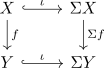

natural transformation from the identity to the suspension
Definition / Proposition
Given category Top, the identity functor and the suspension functor, there exists a natural transformation given by the suspension inclusion
Proof
follows from defintion, as

by element chasing, we get
\begin{align*}
\Sigma(f) \circ \iota(x) =& \iota \circ f(x) \\
=& (f(x), 0.5)
\end{align*}